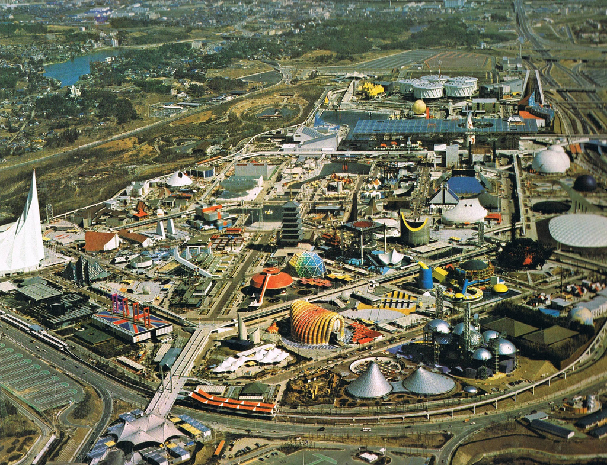
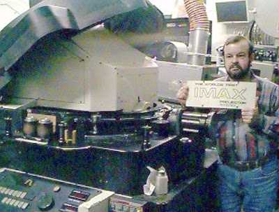
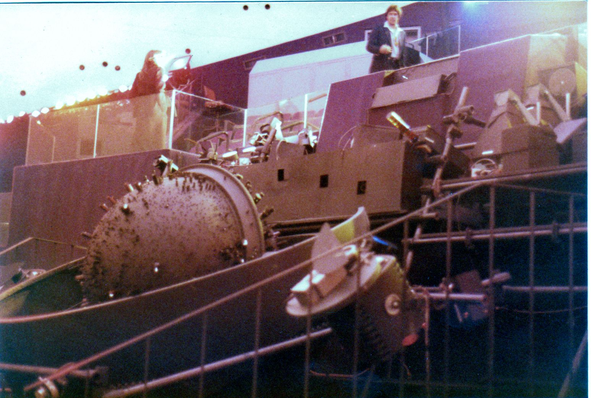
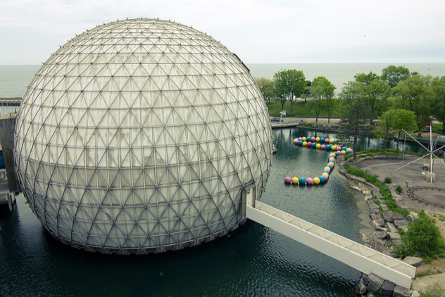

produce a film for Expo '70 in Osaka, Japan

Aerial view of Expo '70
Develop new:
camera to shoot images on a film frame 10 times larger than a 35mm format
equipment to project those larger frame images onto a six-story-high screen
lenses
sound equipment
lighting
seating arrangements
Multiscreen Corporation (now Imax Corporation) was created, and Ferguson was president
Jan Jacobson designed their camera. It uses 65mm film horizontally.
For their projector, Multiscreen Corporation obtained a patent for a Rolling Loop projector from Ronald Jones, but it needed to adapt for the larger size.
William Shaw and Jones developed prototypes for the larger-format projector.
Kroitor, Donald Brittain, Georges Dufaux, and Asuka Productions produced the film so it can be shown with single or multiple projectors
1969-1973
1969
For the projector, Shaw was able to prove that a new prototype can work. The new projector was built and was installed in the Fuji pavilion.

The first IMAX projector
1970
The IMAX system premiered during Expo ‘70. The first IMAX film “Tiger Child” was shown on the big screen while the audience was moved throughout the theatre continuously on a rotating platform, each one viewing the film from a different starting point.
1971
The Cinesphere at Ontario Place, the first permanent IMAX theatre, opens. Ontario Place bought and installed the Expo '70 projector. It debuted in May 1971 by showing the film “North of Superior”
1973
The first permanent IMAX Dome system opens at Reuben H. Fleet Science Centre, San Diego, United States

Fleet Theater at Reuben H. Fleet Science Centre with the Spitz Laboratories planetarium projector array

The Cinesphere